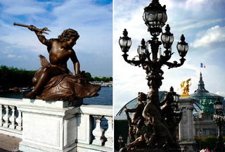
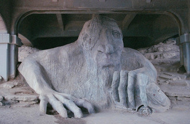
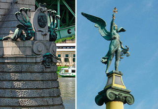
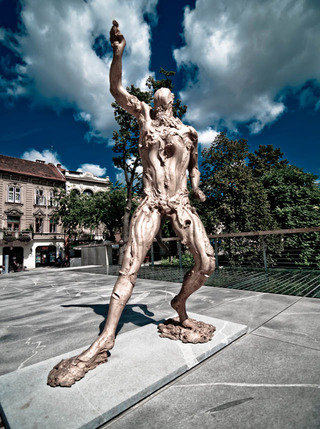
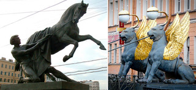

2012-03-25T18:55:00.000-07:00
Bookshelf Heaven: Awesome "Containers" for Books
Bookshelf Heaven: Awesome "Containers" for Books
"QUANTUM SHOT" #761
Link - article by Avi Abrams Not quite "Stairways to Heaven", but totally unique and extremely stylish structures nonetheless
There are other compilations of unique shelf designs, as we are in no way alone in liking visually outstanding and effective ideas in interior design - but bookshelves hold a special place in our hearts... oh, such a special place! First of all, they contain books, a deeply comforting amount of books that we will never be able to read in its entirety in our lifetimes.(images via 1, 2; bottom right is the "Coiled Serpent Book" - more info)
Second, it is one of the very first desires of human spirit to climb the "stairs" and reach the unattainable (or lost) kind of Paradise, so called "inner peace" - starting all the way from Tower of Babel, and continuing through Jacob's Ladder to our current fascination with "skyscrapers": in every case, there is a sort of stepped structure (filled with knowledge at every level) which ultimately leads to inner satisfaction, or so the story goes. The "stairs and ladders" part of this sentiment we will cover in the next article, but today we'll see some lovely stacked bookshelves and some inspiring home library set ups.(more info - Sebastian Errazuriz Ivy shelves, Books with legs and arms (made with bent nails), Circular Moving Bookshelf)
Book shelves, book cases and library stands satisfy on many levels: they contain loads of potentially fascinating knowledge, and they beckon by their very presence to come and partake of their contained wisdom - and be inspired by their fantastic forms in the process. "Fantastic forms", that is, if we consider some of the spectacular designs presented on these pages. The Most Amazing Reading Adventures: Starring the Most Amazing Bookshelves!
Perhaps not very practical, but totally radical and great in every art studio is this Neverending shelving unit from Luca Nichetto:(image credit: Luca Nichetto)
Fabulous shapes of every color and persuasion:(more info - USA map, Spiral, and Wavy bookshelves)(more info - Diagonal units, FlexiTube round units and a Shelf Tree)(more info - Bookshelves with a bench, Ellipse book case, and Saba Italia bookcases)(more info - Round Shelf by Irina Zhdanova, Genetics Bookcase by MYDNA)(more info - Second a Half Dimension book shelf at lower right)
Some of the more radical ideas of storing books can be seen here:(more info - The Brace Case, and Hanging Bookshelf)
I personally love this Sphere Bookcase (more info):(images via)
Russian Constructivism design on the right, and the Sean Yoo's Opus Shelving:(images via 1, 2)Pulseline, Inverted Shelf which you can make yourself (left) and Pin Press (right) - more info:(images via)
Why just set books straight on the shelf? Here is a bold idea: hang them! and preserve the place you're reading, turning book shelf essentially into a bookmark (more info):(images via 1, 2)
On the left image above is the "Equilibrium" set up, and on the right is another hanging idea, this time from Frankfurt, called "Book Wave".
The idea of infinity of books is conveyed nicely in these creations: "Eternity" in the library of Melk monastery in Austria... and the inside of a "Book Cell" sculpture by Matej Kren: (images credit: Cilest, http://www.matejkren.cz/cs/book-cell/, via)
Same "book tunnel" idea can be seen here (on the right is the famous project in the Prague Library, where they used mirrors to achieve this effect):(image credit: Petr Kratochvil)
The famous book staircase features awesome views from every angle - more info:(images via)
And... if you are really proud of your books, then display them OUTSIDE, for all neighborhood to see (just kidding, this is a street art):(images credit: Andre)Optical Illusion Bookshelves
This mind-bending bookshelf is based on the "Impossible Fork" illusion 9see on the image below right). It's been designed by John Leung from ClarkeHopkinsClarke Architects- and fittingly called the “Bias of Thoughts”(image credit: ClarkeHopkinsClarke Architects)
"How many shelves are there? Look to the left: four shelves. Look to the right: three shelves." Neatorama has more images and optical illusion explanation.
Not really an optical illusion (and not really a book shelf) but still a puzzling apparition, is this recursive design by Markus Hoffer:(left image via, right photo manipulation via)"Read your bookshelf!"
This is a sort of a puzzle (if you look closely and see how the shelves are arranged) - but extremely satisfying once you start to read through each and every compartment:(image credit: Arredamenti Saporiti)
Designed by Arredamenti Saporiti: it can also contain a hidden message... or not:(images credit: Arredamenti Saporiti)
Love some weird fiction, or a healthy doze of Lovecraft stories? Then try this Fungi Shelf by Katharina Mischer:(images credit: Katharina Mischer)Reading Nooks & Hideouts
Here is a nook that we all would like to cuddle inside, with a good book:(images via 1, 2)
The lovely kid's reading corner in the right image above is done by Thrifty Decor Chick, where you can find the detailed instructions how to make it yourself. Below you can see the The Cave Bookshelf, designed by Sakura Adachi:(images credit: Sakura Adachi)
Here's a couple of great reading nooks that fit perfectly into the existing interior design of your house. Find that extra-space under stairs, or at windowsills - and use it! -(images via 1, 2)
Help! My books are sinking! -(image credit: Raw Edges)A Wild, Wild Shelf Space
A cube? A book cube! - A Bibliochaise Book Shelf Chair:(images via)
The bottom right image above is another "book chair" that you can order here. Love book chair idea? Makes sense for those who want to keep their library close to their reading space... here are some more designs like this:(images via 1, 2, the recycled book sconce light is via)
... and a few not as functional designs - rather sculptures, good perhaps for your living space visual appeal:(images via)
Books themselves can become shelves sticking out of the wall (order here), or be used as library furniture (oh, blasphemy!):(images via 1, 2)Things organized neatly
First, you have to weigh in your "READ" pile vs. "UNREAD" pile... and decide is it even possible to catch up? - Bookshelf by Niko Economids. If you have a bunch of books "unread", then it is easier just to hang them from the ceiling (just like on the image far right) than to go ahead and read them:(images via)
By now, you all probably have seen the Rainbow Bookshef? if not, here it is, in all its obsessive-compulsive organizing glory:(image via)
You can observe great shelf organizing in action in a video here
Here is an example of a total fail in organizing your reading/working space (some of these, we have to say, have been done "on purpose"):(images via)
Some bizarre shapes seem to crop up every time, with some presenting quite a challenge in fitting with the rest of your furniture. Here is a "wisdom Tree" by Spanish designer Jordi Mila(images credit Jordi Mila, Barcelona)
If you run out of space in your existing bookshelves, then... just stretch them! -(left image via)
On the right image above is the "The Myth of Sisyphus" design by Bruno Petronzi. And for more neatness in organizing things check out this Tumbler site
Finally, here is a fun question, can you tell which image is real and which has been Photoshopped? -
Well, obviously, the one with books bent all out of whack is Photoshop. That was easy. On the left, by the way, is the gorgeous Italian Sherwood Bookcase, which is a clear winner in our books.
For further inspiration and hours of browsing, we invite you to visit Bookshelf Porn website (which has nothing to do with porn, of course, and plenty to offer a curious booklover). In the next article in the series we will highlight some stairs and ladders that will lead to... more bookshelves, filled in turn with... more books, containing in turn more knowledge... well, you get the idea.READ MORE OF OUR "GADGETS" CATEGORY ->CHECK OUT OUR "EXTREE ARCHITECTURE" SERIES! ->
Share
Tweet
 "QUANTUM SHOT" #761 "QUANTUM SHOT" #761
Link - article by Avi Abrams
Not quite "Stairways to Heaven", but totally unique and extremely stylish structures nonetheless
There are other compilations of unique shelf designs, as we are in no way alone in liking visually outstanding and effective ideas in interior design - but bookshelves hold a special place in our hearts... oh, such a special place! First of all, they contain books, a deeply comforting amount of books that we will never be able to read in its entirety in our lifetimes.

(images via 1, 2; bottom right is the "Coiled Serpent Book" - more info)
Second, it is one of the very first desires of human spirit to climb the "stairs" and reach the unattainable (or lost) kind of Paradise, so called "inner peace" - starting all the way from Tower of Babel, and continuing through Jacob's Ladder to our current fascination with "skyscrapers": in every case, there is a sort of stepped structure (filled with knowledge at every level) which ultimately leads to inner satisfaction, or so the story goes. The "stairs and ladders" part of this sentiment we will cover in the next article, but today we'll see some lovely stacked bookshelves and some inspiring home library set ups.

(more info - Sebastian Errazuriz Ivy shelves, Books with legs and arms (made with bent nails), Circular Moving Bookshelf)
Book shelves, book cases and library stands satisfy on many levels: they contain loads of potentially fascinating knowledge, and they beckon by their very presence to come and partake of their contained wisdom - and be inspired by their fantastic forms in the process. "Fantastic forms", that is, if we consider some of the spectacular designs presented on these pages.
The Most Amazing Reading Adventures: Starring the Most Amazing Bookshelves!
Perhaps not very practical, but totally radical and great in every art studio is this Neverending shelving unit from Luca Nichetto:

(image credit: Luca Nichetto)
Fabulous shapes of every color and persuasion:

(more info - USA map, Spiral, and Wavy bookshelves)

(more info - Diagonal units, FlexiTube round units and a Shelf Tree)

(more info - Bookshelves with a bench, Ellipse book case, and Saba Italia bookcases)

(more info - Round Shelf by Irina Zhdanova, Genetics Bookcase by MYDNA)

(more info - Second a Half Dimension book shelf at lower right)
Some of the more radical ideas of storing books can be seen here:

(more info - The Brace Case, and Hanging Bookshelf)
I personally love this Sphere Bookcase (more info):

(images via)
Russian Constructivism design on the right, and the Sean Yoo's Opus Shelving:

(images via 1, 2)
Pulseline, Inverted Shelf which you can make yourself (left) and Pin Press (right) - more info:

(images via)
Why just set books straight on the shelf? Here is a bold idea: hang them! and preserve the place you're reading, turning book shelf essentially into a bookmark (more info):

(images via 1, 2)
On the left image above is the "Equilibrium" set up, and on the right is another hanging idea, this time from Frankfurt, called "Book Wave".
The idea of infinity of books is conveyed nicely in these creations: "Eternity" in the library of Melk monastery in Austria... and the inside of a "Book Cell" sculpture by Matej Kren:

(images credit: Cilest, http://www.matejkren.cz/cs/book-cell/, via)
Same "book tunnel" idea can be seen here (on the right is the famous project in the Prague Library, where they used mirrors to achieve this effect):

(image credit: Petr Kratochvil)
The famous book staircase features awesome views from every angle - more info:
(images via)
And... if you are really proud of your books, then display them OUTSIDE, for all neighborhood to see (just kidding, this is a street art):

(images credit: Andre)
Optical Illusion Bookshelves
This mind-bending bookshelf is based on the "Impossible Fork" illusion 9see on the image below right). It's been designed by John Leung from ClarkeHopkinsClarke Architects- and fittingly called the “Bias of Thoughts”

(image credit: ClarkeHopkinsClarke Architects)
"How many shelves are there? Look to the left: four shelves. Look to the right: three shelves." Neatorama has more images and optical illusion explanation.
Not really an optical illusion (and not really a book shelf) but still a puzzling apparition, is this recursive design by Markus Hoffer:

(left image via, right photo manipulation via)
"Read your bookshelf!"
This is a sort of a puzzle (if you look closely and see how the shelves are arranged) - but extremely satisfying once you start to read through each and every compartment:

(image credit: Arredamenti Saporiti)
Designed by Arredamenti Saporiti: it can also contain a hidden message... or not:
(images credit: Arredamenti Saporiti)
Love some weird fiction, or a healthy doze of Lovecraft stories? Then try this Fungi Shelf by Katharina Mischer:

(images credit: Katharina Mischer)
Reading Nooks & Hideouts
Here is a nook that we all would like to cuddle inside, with a good book:

(images via 1, 2)
The lovely kid's reading corner in the right image above is done by Thrifty Decor Chick, where you can find the detailed instructions how to make it yourself. Below you can see the The Cave Bookshelf, designed by Sakura Adachi:


(images credit: Sakura Adachi)
Here's a couple of great reading nooks that fit perfectly into the existing interior design of your house. Find that extra-space under stairs, or at windowsills - and use it! -


(images via 1, 2)
Help! My books are sinking! -

(image credit: Raw Edges)
A Wild, Wild Shelf Space
A cube? A book cube! - A Bibliochaise Book Shelf Chair:

(images via)
The bottom right image above is another "book chair" that you can order here. Love book chair idea? Makes sense for those who want to keep their library close to their reading space... here are some more designs like this:


(images via 1, 2, the recycled book sconce light is via)
... and a few not as functional designs - rather sculptures, good perhaps for your living space visual appeal:

(images via)
Books themselves can become shelves sticking out of the wall (order here), or be used as library furniture (oh, blasphemy!):

(images via 1, 2)
Things organized neatly
First, you have to weigh in your "READ" pile vs. "UNREAD" pile... and decide is it even possible to catch up? - Bookshelf by Niko Economids. If you have a bunch of books "unread", then it is easier just to hang them from the ceiling (just like on the image far right) than to go ahead and read them:
(images via)
By now, you all probably have seen the Rainbow Bookshef? if not, here it is, in all its obsessive-compulsive organizing glory:

(image via)
You can observe great shelf organizing in action in a video here
Here is an example of a total fail in organizing your reading/working space (some of these, we have to say, have been done "on purpose"):


(images via)
Some bizarre shapes seem to crop up every time, with some presenting quite a challenge in fitting with the rest of your furniture. Here is a "wisdom Tree" by Spanish designer Jordi Mila
(images credit Jordi Mila, Barcelona)
If you run out of space in your existing bookshelves, then... just stretch them! -
(left image via)
On the right image above is the "The Myth of Sisyphus" design by Bruno Petronzi. And for more neatness in organizing things check out this Tumbler site
Finally, here is a fun question, can you tell which image is real and which has been Photoshopped? -

Well, obviously, the one with books bent all out of whack is Photoshop. That was easy. On the left, by the way, is the gorgeous Italian Sherwood Bookcase, which is a clear winner in our books.
For further inspiration and hours of browsing, we invite you to visit Bookshelf Porn website (which has nothing to do with porn, of course, and plenty to offer a curious booklover). In the next article in the series we will highlight some stairs and ladders that will lead to... more bookshelves, filled in turn with... more books, containing in turn more knowledge... well, you get the idea.
READ MORE OF OUR "GADGETS" CATEGORY ->
CHECK OUT OUR "EXTREE ARCHITECTURE" SERIES! ->

|
2012-03-19T02:07:00.001-07:00
Link Latte 176
Link Latte 176
#176 - Week of March 17, 2012
Spectacular: Rivers of Molten Lava - [wow video]
The most stunning Google Earth pictures? You decide! - [cool site]
"John Carter of Mars" Concept Art - [gallery]
Nazi's Regulations on Playing Jazz - [simply weird]
Top Ten Japanese Houses - [architecture]
Robot Quadrotors Perform James Bond Theme - [geek art]
Great Personalities in Their Own Words - [awesome collection]
The signals at the station were changed by a... baboon - [weird]
Japanese "Land Islands" Idea, info - [urban planning]
Impressive: East Germany, Before & Now - [gallery, click next]
First Country to Disappear Due to the Climate Change - [wow info]
"Immortality Drive" is in orbit now!- [weird fact]
Isaac Asimov may be right in this... - [interesting observation]
Incredible Ink in a Liquid Art by Alberto Seveso - [art]
Wine Aroma wheel, info, site - [interesting]
Don't read this while eating breakfast - [wow science]
Toys Made from Trash: Lots of Ideas - [ingenuity from India]
Counting Fingers Fail - [funny pic]
Countries with Surprisingly Better Education - [interesting]
Crank-Powered Japanese Vending Machine - [cool idea, video]
Synchronized Apes - [fun video]
Dolphins' Suicide & Their Rescue by Humans - [wow video]
Plane Landing After Engine Dies - [wow video]
Cat That Thinks It's a Dog! - [fun video]
Spill-Proof and Non-Stick Beer - [cool video ads]
Incredible Screaming Frog - [fun video, loud!]
"Sweeping Beauty": Fresh Idea in Art! - [cool video]
Super Cute Baby Elephants - [article, pics]
Some of the Strangest & Very Frightening Foods - [compilation]
Quality-Schnallity to the Rescue! - [promotion]SEE ALL OTHER LINK LATTE ISSUES HERE
 #176
#176 -
Week of March 17, 2012
Spectacular: Rivers of Molten Lava -
[wow video]
The most stunning Google Earth pictures? You decide! -
[cool site]
"John Carter of Mars" Concept Art -
[gallery]
Nazi's Regulations on Playing Jazz -
[simply weird]
Top Ten Japanese Houses -
[architecture]
Robot Quadrotors Perform James Bond Theme -
[geek art]
Great Personalities in Their Own Words -
[awesome collection]
The signals at the station were changed by a... baboon -
[weird]
Japanese "Land Islands" Idea, info -
[urban planning]
Impressive: East Germany, Before & Now -
[gallery, click next]
First Country to Disappear Due to the Climate Change -
[wow info]
"Immortality Drive" is in orbit now!-
[weird fact]
Isaac Asimov may be right in this... -
[interesting observation]
Incredible Ink in a Liquid Art by Alberto Seveso -
[art]
Wine Aroma wheel, info, site -
[interesting]
Don't read this while eating breakfast -
[wow science]
Toys Made from Trash: Lots of Ideas -
[ingenuity from India]
Counting Fingers Fail -
[funny pic]
Countries with Surprisingly Better Education -
[interesting]
Crank-Powered Japanese Vending Machine -
[cool idea, video]
Synchronized Apes -
[fun video]
Dolphins' Suicide & Their Rescue by Humans -
[wow video]
Plane Landing After Engine Dies -
[wow video]
Cat That Thinks It's a Dog! -
[fun video]
Spill-Proof and Non-Stick Beer -
[cool video ads]
Incredible Screaming Frog -
[fun video, loud!]
"Sweeping Beauty": Fresh Idea in Art! -
[cool video]
Super Cute Baby Elephants -
[article, pics]
Some of the Strangest & Very Frightening Foods -
[compilation]
Quality-Schnallity to the Rescue! -
[promotion]SEE ALL OTHER LINK LATTE ISSUES HERE
2012-03-14T22:08:00.000-07:00
Architectural Gems of Old Russia, Part 2
Architectural Gems of Old Russia, Part 2
"QUANTUM SHOT" #560
Link - article by Avi Abrams Lovely, slender, pure white shapes of old churches and palaces - arching into the sky and into your heart
Old Russian architecture is still largely unknown in the West, if you consider that most people are only aware of the Kremlin and maybe one or two key churches in major towns. But the land that accepted Byzantine Christianity back in 988 AD - and produced mighty works of divine architecture and art in the centuries since - is unimaginably vast. Once you decide to venture into pastoral and often bleak small towns and Russian countryside, there is a good chance that architectural gems and religious art masterpieces hidden there "in the rough" will be totally unknown to most people. And yet, the pure, inspired, and rich legacy of the first Russian builders is worth discovery and, after you've been enchanted, further exploration.
In our first part we saw the "magical" wooden palace that's been recently restored in Moscow. Today we are going to highlight significantly less known (but no less beautiful) structures in Russian small towns... but we'll start with a true Baroque skyscraper, if there ever was one!This slender bell tower could've been the Highest Building in Europe, back in 1750
You're looking at the model of the Smolny Convent in St. Petersburg (it was only partially built, without the incredible bell tower). The Italian-born architect Francesco Bartolomeo Rastrelli lived and worked in Russia during the reign of Elizabeth - and he had a vision to create something epic and undoubtedly special: a bell tower 140 meters tall with five distinct levels that would be taller than anything in Europe at the time!(image via, click to enlarge)
Rastrelli's work was so ephemeral and ornate (he preferred to build in the style of Late Baroque, described as "sumptuous and majestic") that other architects humbly accepted the Smolny Convent as a "way how the REAL divine architecture should look" - never mind that the ambitious bell tower was not finished...
Some sources state that Elizabeth's death in 1762 prevented Rastrelli from completing this grand design (Catherine the Great favored Neo-Classical style instead); other sources insist that it was ultimately Rastrelli's decision to abandon the construction. Perhaps, he realized that the bell tower was too dominating and overpowering the whole Convent arrangement?
In any case, even without the huge bell tower, today the Smolny Convent shines delicately in the night, a true jewel of St. Peterburg's architecture:(image via)The ancient city of Kolomna
Who knew that a typical, drab, and grayish provincial town could hide such bursts of color? The Cathedral Square ensemble positively glows in the evening light:(image credit: Vilenia Petrova)(image credit: Yulia Baturina)(image credit: Yulia Baturina)(image credit: Yulia Baturina)The small town of Vereya
The Nativity Cathedral borrows some charm and majesty from the softly-glowing evening hour:(images credit: Igor Alpatov)
To give you an idea of the deeply mystical Russian forest and countryside surrounding these architectural gems, here is a typical painting-like river view:(image credit: Igor Alpatov)
Warm, inviting winter scene, reminiscent of Christmas:(image credit: Igor Alpatov)
Church of the Sign of Our Lady in Dubrovitsy, a small town near Moscow, is almost unknown to foreigners, yet truly beautiful in its form:(image credit: Vilenia Petrova)
The ancient city of Pskov: fantastic Novgorod-style (inspired by Vikings) fortress architecture of the Pskov Kremlin -(image via)
...and the Pskov-Pechersky Monastery: "The Road Goes Ever On"(images credit: Sergey Kulikov)
The ancient city of Rostov: Spaso-Yakovlevski monastery walls invoke the sense of deep past and rich history:(image credit: Oksana Ermikhina)
The ancient city of Suzdal: this pastoral, painting-like scene speaks of quiet peaceful small-town living (though the realities of provincial cities in Russia are pretty harsh):(image credit: Oksana Ermikhina)
Russian Christmas comes complete with Father Frost (Ded Moroz), many presents and nippy cold weather:(image credit: Oksana Ermikhina)
The Intercession Cathedral (Pokrovsky sobor) in Suzdal:(image credit: Oksana Ermikhina)
Part of Russia's "Golden Ring" and first chronicled in 1024, Suzdal "once had 40 churches for 400 families". The compact Suzdal-Vladimir area contains 5 monasteries, 36 churches and 15 bell towers.
Here is the Cathedral of the Dormition in the ancient city of Vladimir: the blessed purity of white, the inspiration of pure faith:(image credit: Viktor Galkin)The Ancient City of Murom: Birthplace of a true Russian superhero
We are talking about Iliya Muromets, the ancient and all-powerful warrior and good-hearted "saviour" (bogatyr) who featured prominently in ancient Russian literature and magical fairy tales (together with even more powerful "elemental" mountain-like giant Svyatogor):(top right: "Bogatyrs" painting (1898) by Viktor Vasnetsov; images via 1, 2)
This mighty hero was born here in time immemorial... and the city still breathes the mystical atmosphere of a fascinating past:(image credit: Sergei Oseledko)
Very compact Kosmodemyanskaya Church... here your heart may skip a bit (if you let the silence of the place get to you):(image credit: Vyacheslav Zaikin)
Some bell towers conceal an icon, a unique decorative touch:(image credit: Sergei Oseledko, Constantin Voutsen)
Murom's Church of Ascension sports very cute golden mini-onion domes (left) and on the right is the Svyato-Blagoveschenski monastery built in 1554:(image credit: Alexander Markin)
Murom's church of Nikolai Tchudotvorets, finished in profound yellow:(image credit: Alexander Markin)
Cathedral of the Annunciation and the Trinity Cathedral, with yet another icon set in a wall:(images credit: Andrey Panisko)
Near Murom, another old town of Uglich is famous for having the best cheese in Russia... Crossing over from Russia to Western Ukraine, some intensely romantic views can also be found, like this photo of the Kamenets-Podolski monastery:(image credit: Yury Gulyaev)
Many local churches are being restored in small towns all over Russia today, but also many old-style typical log houses get a fresh layer of paint:(image credit: sergefromru)
Finishing our review of wonders in obscure Russian small towns and countryside, here is a whimsical old-style motion wooden toy from Bogorodskoye village... with a definitely modern touch! -(images credit: Evgeniy Kucherov, 2)
These toys are made from hand-carved solid Linden wood, and they come alive when you swing them in a circular motion - see videoREAD THE FIRST PART HERE ->CONTINUE TO "BEST OF RUSSIA" SERIES! ->
Share
Tweet
"QUANTUM SHOT" #560
Link - article by Avi Abrams
Lovely, slender, pure white shapes of old churches and palaces - arching into the sky and into your heart
Old Russian architecture is still largely unknown in the West, if you consider that most people are only aware of the Kremlin and maybe one or two key churches in major towns. But the land that accepted Byzantine Christianity back in 988 AD - and produced mighty works of divine architecture and art in the centuries since - is unimaginably vast. Once you decide to venture into pastoral and often bleak small towns and Russian countryside, there is a good chance that architectural gems and religious art masterpieces hidden there "in the rough" will be totally unknown to most people. And yet, the pure, inspired, and rich legacy of the first Russian builders is worth discovery and, after you've been enchanted, further exploration.
In our first part we saw the "magical" wooden palace that's been recently restored in Moscow. Today we are going to highlight significantly less known (but no less beautiful) structures in Russian small towns... but we'll start with a true Baroque skyscraper, if there ever was one!
This slender bell tower could've been the Highest Building in Europe, back in 1750
You're looking at the model of the Smolny Convent in St. Petersburg (it was only partially built, without the incredible bell tower). The Italian-born architect Francesco Bartolomeo Rastrelli lived and worked in Russia during the reign of Elizabeth - and he had a vision to create something epic and undoubtedly special: a bell tower 140 meters tall with five distinct levels that would be taller than anything in Europe at the time!

(image via, click to enlarge)
Rastrelli's work was so ephemeral and ornate (he preferred to build in the style of Late Baroque, described as "sumptuous and majestic") that other architects humbly accepted the Smolny Convent as a "way how the REAL divine architecture should look" - never mind that the ambitious bell tower was not finished...

Some sources state that Elizabeth's death in 1762 prevented Rastrelli from completing this grand design (Catherine the Great favored Neo-Classical style instead); other sources insist that it was ultimately Rastrelli's decision to abandon the construction. Perhaps, he realized that the bell tower was too dominating and overpowering the whole Convent arrangement?
In any case, even without the huge bell tower, today the Smolny Convent shines delicately in the night, a true jewel of St. Peterburg's architecture:

(image via)
The ancient city of Kolomna
Who knew that a typical, drab, and grayish provincial town could hide such bursts of color? The Cathedral Square ensemble positively glows in the evening light:

(image credit: Vilenia Petrova)

(image credit: Yulia Baturina)

(image credit: Yulia Baturina)

(image credit: Yulia Baturina)
The small town of Vereya
The Nativity Cathedral borrows some charm and majesty from the softly-glowing evening hour:

(images credit: Igor Alpatov)
To give you an idea of the deeply mystical Russian forest and countryside surrounding these architectural gems, here is a typical painting-like river view:

(image credit: Igor Alpatov)
Warm, inviting winter scene, reminiscent of Christmas:

(image credit: Igor Alpatov)
Church of the Sign of Our Lady in Dubrovitsy, a small town near Moscow, is almost unknown to foreigners, yet truly beautiful in its form:

(image credit: Vilenia Petrova)
The ancient city of Pskov: fantastic Novgorod-style (inspired by Vikings) fortress architecture of the Pskov Kremlin -

(image via)
...and the Pskov-Pechersky Monastery: "The Road Goes Ever On"


(images credit: Sergey Kulikov)
The ancient city of Rostov: Spaso-Yakovlevski monastery walls invoke the sense of deep past and rich history:

(image credit: Oksana Ermikhina)
The ancient city of Suzdal: this pastoral, painting-like scene speaks of quiet peaceful small-town living (though the realities of provincial cities in Russia are pretty harsh):

(image credit: Oksana Ermikhina)
Russian Christmas comes complete with Father Frost (Ded Moroz), many presents and nippy cold weather:

(image credit: Oksana Ermikhina)
The Intercession Cathedral (Pokrovsky sobor) in Suzdal:

(image credit: Oksana Ermikhina)
Part of Russia's "Golden Ring" and first chronicled in 1024, Suzdal "once had 40 churches for 400 families". The compact Suzdal-Vladimir area contains 5 monasteries, 36 churches and 15 bell towers.
Here is the Cathedral of the Dormition in the ancient city of Vladimir: the blessed purity of white, the inspiration of pure faith:

(image credit: Viktor Galkin)
The Ancient City of Murom: Birthplace of a true Russian superhero
We are talking about Iliya Muromets, the ancient and all-powerful warrior and good-hearted "saviour" (bogatyr) who featured prominently in ancient Russian literature and magical fairy tales (together with even more powerful "elemental" mountain-like giant Svyatogor):
(top right: "Bogatyrs" painting (1898) by Viktor Vasnetsov; images via 1, 2)
This mighty hero was born here in time immemorial... and the city still breathes the mystical atmosphere of a fascinating past:
(image credit: Sergei Oseledko)
Very compact Kosmodemyanskaya Church... here your heart may skip a bit (if you let the silence of the place get to you):

(image credit: Vyacheslav Zaikin)
Some bell towers conceal an icon, a unique decorative touch:
(image credit: Sergei Oseledko, Constantin Voutsen)
Murom's Church of Ascension sports very cute golden mini-onion domes (left) and on the right is the Svyato-Blagoveschenski monastery built in 1554:
(image credit: Alexander Markin)
Murom's church of Nikolai Tchudotvorets, finished in profound yellow:
(image credit: Alexander Markin)
Cathedral of the Annunciation and the Trinity Cathedral, with yet another icon set in a wall:
(images credit: Andrey Panisko)
Near Murom, another old town of Uglich is famous for having the best cheese in Russia... Crossing over from Russia to Western Ukraine, some intensely romantic views can also be found, like this photo of the Kamenets-Podolski monastery:

(image credit: Yury Gulyaev)
Many local churches are being restored in small towns all over Russia today, but also many old-style typical log houses get a fresh layer of paint:
(image credit: sergefromru)
Finishing our review of wonders in obscure Russian small towns and countryside, here is a whimsical old-style motion wooden toy from Bogorodskoye village... with a definitely modern touch! -
(images credit: Evgeniy Kucherov, 2)
These toys are made from hand-carved solid Linden wood, and they come alive when you swing them in a circular motion - see video
READ THE FIRST PART HERE ->
CONTINUE TO "BEST OF RUSSIA" SERIES! ->
|